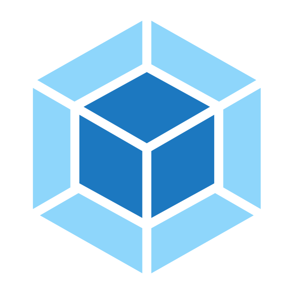

- Home
- About
About
The Docker Registry Frontend utilizes the Docker Registry API
to show and manipulate the content of any private Docker registry.
The original source code can be found on Github but if you just want to
run your own copy of the software, I suggest you run it in its own Docker container with a built dockerfile by cloning the fork repository from here.
Tools used
The Docker Registry Frontend is built with these tools:

AngularJS
AngularJS sits at the core of all development. It is used to separate content from logic through mechanisms like two-way data-binding and a clear MVC pattern.
Checkout AngularJS

Webpack
The Webpack task runner is used to serve the website during development, to test the code,
and to build (e.g. minification) the code for deployment.
Checkout Webpack
NPM
The NPM package manager is used to manage all the dependencies of the code.
Checkout NPM